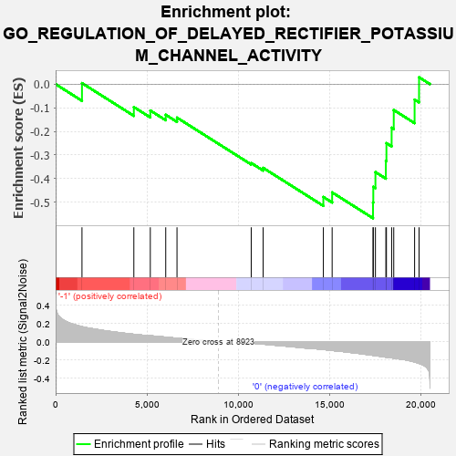
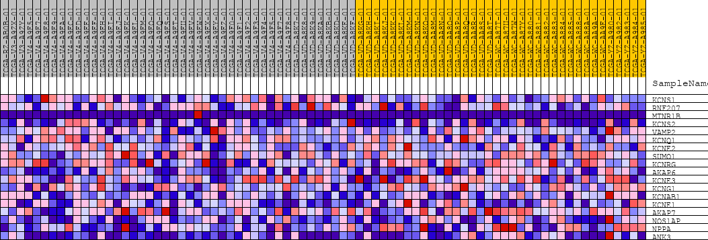
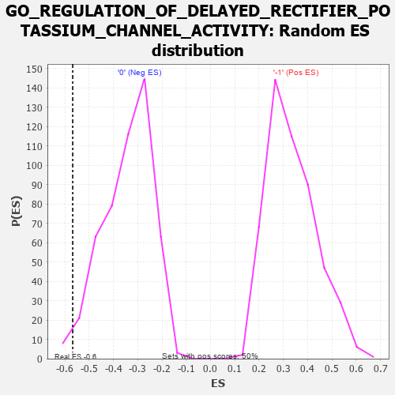

| | | Dataset | GSEAExpression.phenotype_uvm.cls#-1_versus_0 |
| Phenotype | phenotype_uvm.cls#-1_versus_0 |
| Upregulated in class | 0 |
| GeneSet | GO_REGULATION_OF_DELAYED_RECTIFIER_POTASSIUM_CHANNEL_ACTIVITY |
| Enrichment Score (ES) | -0.5675262 |
| Normalized Enrichment Score (NES) | -1.6680856 |
| Nominal p-value | 0.018072288 |
| FDR q-value | 1.0 |
| FWER p-Value | 0.981 |
Table: GSEA Results Summary

Fig 1: Enrichment plot: GO_REGULATION_OF_DELAYED_RECTIFIER_POTASSIUM_CHANNEL_ACTIVITY
Profile of the Running ES Score & Positions of GeneSet Members on the Rank Ordered List
| PROBE | DESCRIPTION
(from dataset) | GENE SYMBOL | GENE_TITLE | RANK IN GENE LIST | RANK METRIC SCORE | RUNNING ES | CORE ENRICHMENT | | 1 | KCNS1 | na | | | 1444 | 0.166 | 0.0045 | No |
| 2 | RNF207 | na | | | 4287 | 0.082 | -0.0969 | No |
| 3 | MTNR1B | na | | | 5189 | 0.065 | -0.1115 | No |
| 4 | KCNS2 | na | | | 6035 | 0.051 | -0.1296 | No |
| 5 | VAMP2 | na | | | 6652 | 0.040 | -0.1417 | No |
| 6 | KCNQ1 | na | | | 10720 | -0.014 | -0.3339 | No |
| 7 | KCNE2 | na | | | 11374 | -0.025 | -0.3544 | No |
| 8 | SUMO1 | na | | | 14674 | -0.083 | -0.4776 | No |
| 9 | KCNRG | na | | | 15155 | -0.095 | -0.4583 | No |
| 10 | AKAP6 | na | | | 17396 | -0.147 | -0.5008 | Yes |
| 11 | KCNE3 | na | | | 17411 | -0.148 | -0.4347 | Yes |
| 12 | KCNG1 | na | | | 17528 | -0.151 | -0.3722 | Yes |
| 13 | KCNAB1 | na | | | 18100 | -0.167 | -0.3243 | Yes |
| 14 | KCNE1 | na | | | 18131 | -0.168 | -0.2497 | Yes |
| 15 | AKAP7 | na | | | 18416 | -0.175 | -0.1843 | Yes |
| 16 | NOS1AP | na | | | 18532 | -0.178 | -0.1093 | Yes |
| 17 | NPPA | na | | | 19675 | -0.220 | -0.0654 | Yes |
| 18 | ANK3 | na | | | 19919 | -0.235 | 0.0292 | Yes |
Table: GSEA details [plain text format]

Fig 2: GO_REGULATION_OF_DELAYED_RECTIFIER_POTASSIUM_CHANNEL_ACTIVITY
Blue-Pink O' Gram in the Space of the Analyzed GeneSet

Fig 3: GO_REGULATION_OF_DELAYED_RECTIFIER_POTASSIUM_CHANNEL_ACTIVITY: Random ES distribution
Gene set null distribution of ES for GO_REGULATION_OF_DELAYED_RECTIFIER_POTASSIUM_CHANNEL_ACTIVITY